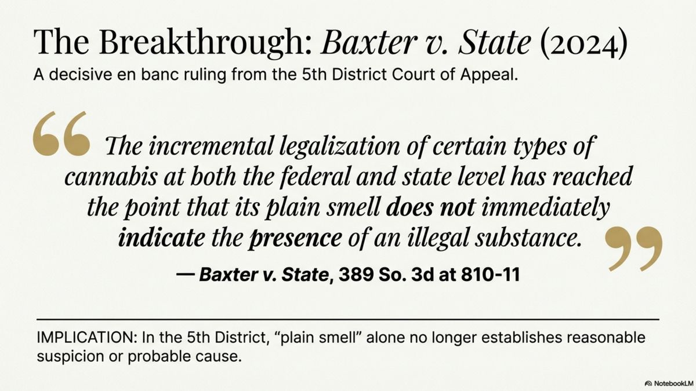
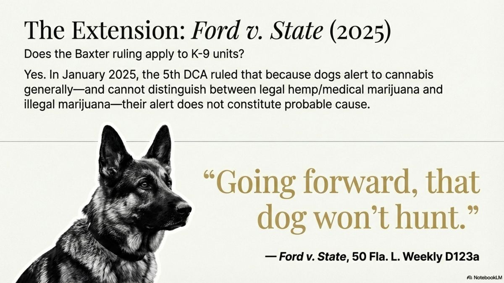
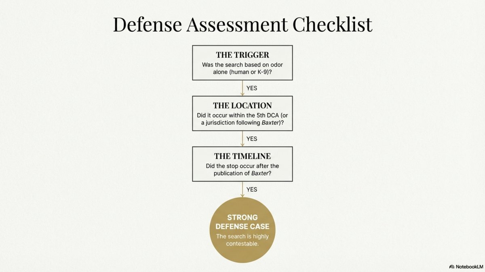

Can Police Search Your Car Just Because They Smell Marijuana? Florida Courts Are Split

You're pulled over for a routine traffic violation. The officer approaches your window, pauses, and says the words that make every driver's heart sink: "I smell marijuana." In the past, that statement guaranteed a vehicle search. But Florida's appellate courts are now split on whether marijuana odor alone still provides probable cause—and that split creates an opportunity for your defense.
The Problem: Florida's Medical Marijuana Reality
When Florida voters passed Amendment 2 in 2016, they created a constitutional right for qualified patients to possess cannabis. Today, hundreds of thousands of Floridians hold valid medical marijuana cards.
This creates a fundamental legal question: If marijuana possession is now legal for a significant portion of the population, does the odor of cannabis still automatically indicate criminal activity? Or is it now just as ambiguous as the smell of alcohol—legal for most people, illegal only in certain circumstances?
The Core Issue
The 4th Amendment protects you from unreasonable searches. Police need either a warrant or probable cause—a fair probability that they'll find evidence of a crime. If marijuana odor is equally consistent with legal activity (medical use) and illegal activity (recreational possession), does it still provide probable cause?
Florida's Appellate Courts Are Split
Florida's District Courts of Appeal have issued conflicting rulings on whether marijuana odor alone still provides probable cause. This split means the outcome of your case may depend on which legal arguments your attorney raises—and how aggressively they're pursued.
| Court | Key Case | Holding |
|---|---|---|
| 1st DCA | Johnson v. State (2019) | Odor = Probable Cause |
| 2nd DCA | Owens v. State (2021) | Odor = Probable Cause |
| 3rd DCA | Wright-Johnson v. State (2025) | Declined to Decide |
| 4th DCA | State v. Fortin (2024) | Smell + Other Factors = PC |
| 5th DCA | Baxter v. State (2024) | Odor Alone ≠ Probable Cause |
| 6th DCA | — | No Ruling Yet |
The Baxter Decision: A Breakthrough for Defense
In Baxter v. State, 389 So. 3d 803 (Fla. 5th DCA 2024), the Fifth District Court of Appeal ruled en banc that the "plain smell" of cannabis alone is no longer sufficient to establish reasonable suspicion or probable cause for a search.
The court's reasoning recognized the changed legal landscape:
"The incremental legalization of certain types of cannabis at both the federal and state level has reached the point that its plain smell does not immediately indicate the presence of an illegal substance."
— Baxter v. State, 389 So. 3d at 810-11

This is a significant shift from decades of precedent. The court recognized that just as the smell of alcohol doesn't automatically indicate drunk driving, the smell of marijuana no longer automatically indicates criminal possession.
January 2025: The 5th DCA Extends Baxter to Drug Dogs
In Ford v. State, 50 Fla. L. Weekly D123a (Fla. 5th DCA 2025), the court extended Baxter's reasoning to K-9 drug detection. The court held that a drug dog's alert—when the dog cannot distinguish between legal and illegal cannabis—cannot alone provide probable cause.
"Going forward, that dog won't hunt."
— Ford v. State, 50 Fla. L. Weekly D123a
The court explained that because drug dogs are trained to alert to THC—which is present in both illegal marijuana and legal medical marijuana or hemp—their alert doesn't tell officers whether the substance detected is legal or illegal.

What About the Other Courts?
Courts that have ruled odor still provides probable cause rely on several arguments:
- Recreational marijuana is still illegal: Medical use is a narrow exception, not the rule
- Using in a vehicle is always illegal: Even medical patients cannot lawfully smoke marijuana in vehicles under § 381.986
- Probable cause is a low bar: It requires only a "fair probability," not certainty
- DUI concern: Smell of marijuana while operating a vehicle suggests possible impaired driving
The 3rd DCA, in Wright-Johnson v. State (2025), explicitly declined to decide whether the plain smell doctrine remains valid, instead affirming on other grounds. This leaves the issue unsettled in that district.
What "Additional Factors" Might Justify a Search?
Even in jurisdictions following Baxter, officers can still search if they have additional indicia of criminal activity beyond just the odor. Courts have found probable cause when officers also observed:
- Visible marijuana: Cannabis or paraphernalia in plain view
- Improper packaging: Marijuana not in original medical dispensary container (required by § 381.986(14)(a))
- Signs of impairment: Bloodshot eyes, slurred speech, difficulty following instructions
- Admissions: Statements about recent use or non-medical possession
- No medical card: Driver confirms they are not a medical marijuana patient
- Furtive movements: Attempting to hide something when pulled over
In State v. Fortin (4th DCA 2024), the court found probable cause because, in addition to the smell, the officer saw marijuana in a clear plastic bag rather than medical dispensary packaging.
Key Takeaway for Medical Patients
If you're a medical marijuana patient: always keep cannabis in original dispensary packaging, never consume in your vehicle, and understand that improper storage can eliminate your legal protections during a traffic stop.
The Good Faith Exception: Why Some Searches Still Stand
Even when courts agree a search was improper under current law, evidence may not be suppressed if officers acted in good faith reliance on then-existing precedent.
In both Baxter and Ford, the courts ruled the searches lacked probable cause but still denied suppression because officers reasonably relied on prior case law that permitted such searches. This doctrine, from Davis v. United States, 564 U.S. 229 (2011), protects officers who follow the law as it existed at the time.
However, now that Baxter is published precedent, officers in that district can no longer claim good faith reliance on the old rule. Future searches based solely on odor are more vulnerable to suppression.
What To Do If You Were Searched Based on Marijuana Odor
If you're facing charges after a search based on marijuana odor, here's what you need to know:
- Get a copy of the police report. Review exactly what the officer documented as the basis for the search.
- Identify additional factors. Did the officer cite anything besides odor? Visible contraband? Statements you made? Signs of impairment?
- Check the packaging. If you're a medical patient, was your marijuana in original dispensary packaging?
- Contact a criminal defense attorney. A motion to suppress could result in your charges being reduced or dismissed.
Motion to Suppress: Your Strongest Defense
If evidence in your case came from an unlawful search, that evidence can be suppressed—meaning it cannot be used against you at trial. Without the evidence, the prosecution often has no case.
Given the current split in Florida law, here's how a motion to suppress might be argued:
- The officer searched based on marijuana odor alone
- No additional factors indicated criminal activity
- Under Baxter v. State and Ford v. State, odor alone is insufficient for probable cause
- Even where Baxter isn't binding, it's persuasive authority reflecting the changed legal landscape
- The search violated the 4th Amendment
- All evidence must be suppressed
This is exactly the kind of case where the right attorney makes all the difference. As a former Florida Highway Patrol Trooper and Orange County Deputy Sheriff, I know how officers document their searches—and I know how to challenge them.

The Bottom Line
Florida law on marijuana odor and vehicle searches is in flux. While some courts still hold that odor alone provides probable cause, others have recognized that medical marijuana has fundamentally changed the analysis. This split creates opportunities for defense attorneys to challenge searches that would have been routine just a few years ago.
If you were searched based on the smell of marijuana, don't assume the search was legal. The right motion, argued properly, could make all the difference in your case.
Searched Based on Marijuana Odor in Florida?
Florida courts are split on whether marijuana smell alone justifies a search. If police searched your vehicle based on odor, you may have grounds to challenge the evidence. Call now for a free case evaluation.
Related Articles
Your Rights During a Traffic Stop in Florida
What you can and can't do when pulled over by police.
BlogMedical Marijuana and Original Packaging Requirements
How Florida law affects medical marijuana patients.
Need Legal Help?
If you're facing criminal charges in Central Florida, an experienced defense attorney can make the difference. Get a free consultation to discuss your case.
Contact Lotter Law at 407-500-7000 for a free consultation.

Jeff Lotter
Criminal Defense Attorney | Former State Trooper
Jeff Lotter is an Orlando criminal defense attorney and former Florida Highway Patrol trooper. He uses his law enforcement background to build stronger defenses for clients facing criminal charges.